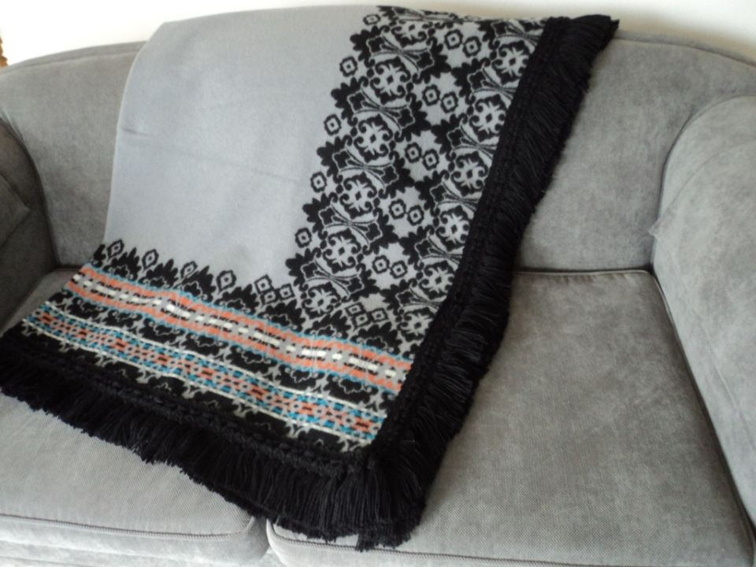
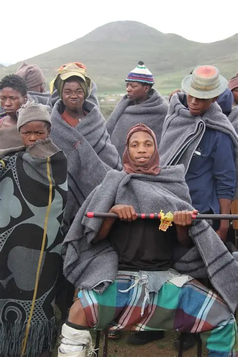

MOHODU
Oldest Basotho woollen blanket dating back to mid thirties.
SEANAMARENA
Royal crown jewel of Basotho Heritage, it dates bak to 1930`s created by late MR Charles Hendry Robertson.

PITSENG
Pitseng blanket is designed by a young Mosotho.
MANOTI A KORIANA
This blanket is designed by Thaabe Letsie aka Ntate Stunna a young Mosotho, born rapper song-writter and cinematographer.He is well refined DNA sound is a fashion of trap and famo.

LINARE
Linare is basotho blanket is desinged by Motsamai Moloko,Lecturer at Limkokwing Universty of Creative Technology, in celebration of King Letsie |||`s birthday in 2009.
LETLAMA
Letlama blanket is worn by Basotho men.It features a striking border pattern with a plain reversible centre.It is the only blanket designed this way.
DIASPORA MAIZE
It is designed by a young Mosotho Women,a poetry of Lesotho

MMARONA
Made in honour of Her Majesty Ma'mohato 'M'ARONA
CHABANA SA KHOMO
Designed by Mokete Mohapi,a distinguished creative director,with a graphic design degree and a BA Honours in fine arts.

DIASPORA DIAMONDS
Designed by Alice Bereng born in Lesotho, currently resides in North America

MALUTI
It is named after the spira aloe which is only found in the mauti moutains of Lesotho.
TJALE E NCHA
It is worn by Bo 'Me' ba Pitiki.

BODULO
Inspired by Litema,a form of Basotho mural art, the design tells the story of the Basotho people`s traditioal lifestyle.
MOTSOAKO
Motsoako blanket is similar to the Matlama blanket design.
LETHOKWA
It is mainly worn by livestock herders in Lesotho.
KOBO EA POLOKO
Inspired by Maleh`s late grandmother,Matlelima Anna Hlalele.

TJALE EA KHALE
old design of new brides blankets.

SESHOESHOE
Seshoeshoe is a dress made for women with different patterns.
TSHETSHE
Tshesthse is a hat made of grass,it is like a sunhat
MOKOROTLO
It is a hat made of grass,man-made by Basotho.It is a type of straw hat widely used for traditional Sotho clothing.

MOSE OA KHOMO
It`s a dress made of a cow`s skin.

THETHANA EA LITOLOBONYA
This attire is made of a sag,it is made and worn by women when doing a dance called litolobonya.
MOSE WA NGOALE
This is a dress for women at the initiation school.

KUANE
Hat made for men.It is made of aniaml skin.
TRADITIONAL SKIRTS
Skirts particularly made for girls.

MOSE OA KHOMO
This dress is made of cow skin.It is worn by old women.
SEFATLA
This are shoes made of animal skin.
SETEA
This is a dress made for young girls,this dress is made of animal skin.
LETATA
This is made of animal skin.